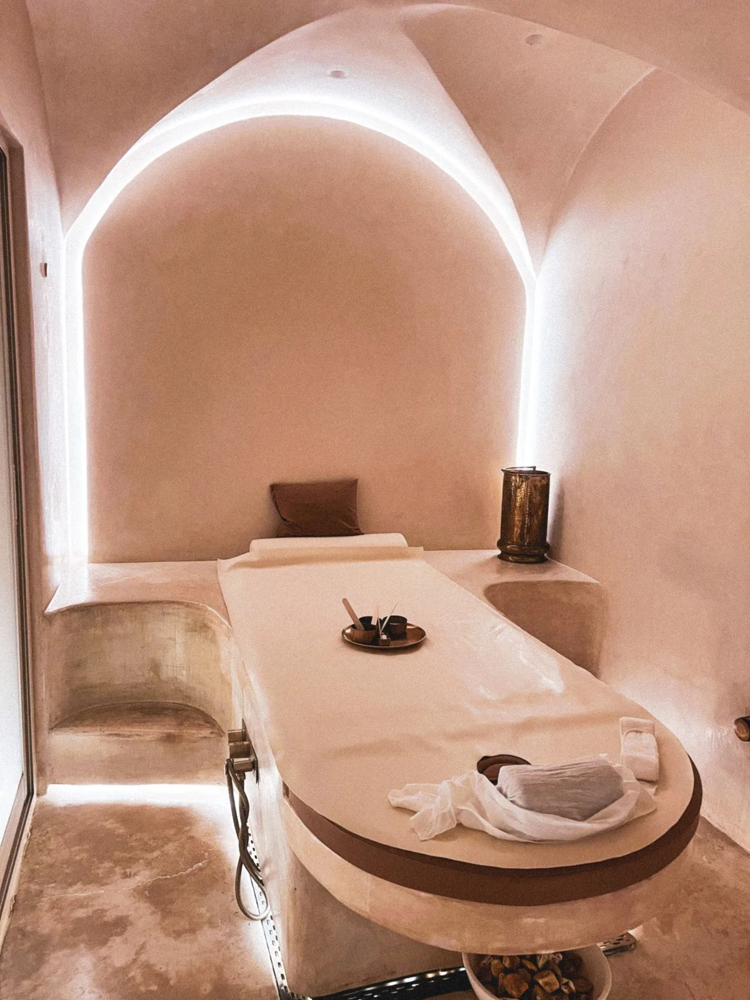
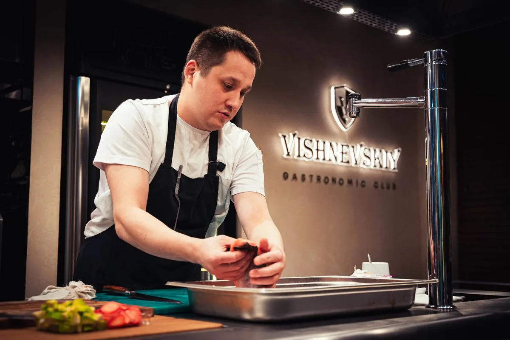
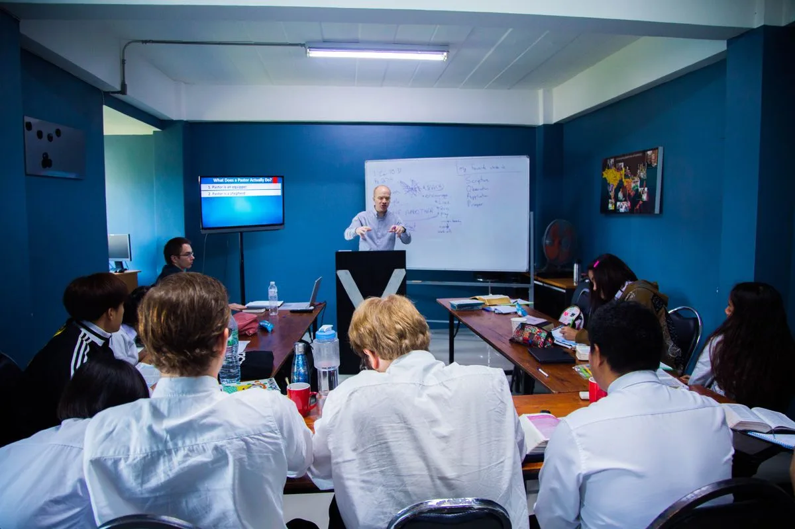
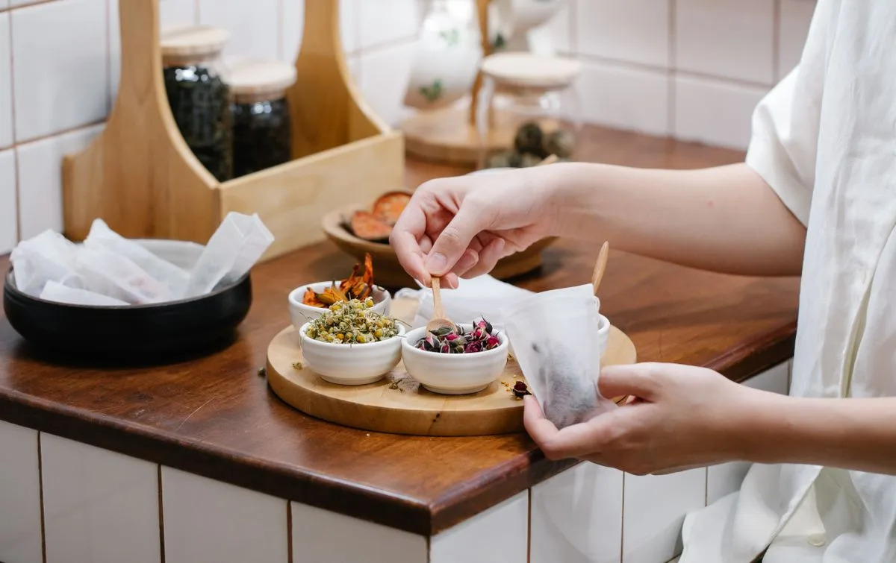

Partner council
Share supply, quality, and guest feedback; plan new seasonal products
SASANG LIFE WELLNESS OFFICE / OPERATING BLUEPRINT
Constitution Lifestyle implementation organization · convergence content partnerships · staffing · automated operating system
OPERATING PRINCIPLES / 01

The office holds the method, training, partner relationships, and data; site teams run day-to-day operations.
Therapist and consultant training is a Phase 0 prerequisite.
The VIGO team structure becomes a replication kit for Texas K-Town and partner properties.
Systems handle repetition so people can focus on consultation and care.
Review claims, safety, and personal information practices across every channel.
GOVERNANCE & DELIVERY / 02
[ Steering Committee ] Resort operator · investors · Constitution Life
│
[Academic & Method Lead] Dr. Yim DongKoo ── [Overall Wellness Director] Ryu JeongKun
│
┌──────────┬──────────┬──────────┬──────────┬──────────┐
Method R&D Academy & Partner Brand & Operations &
Lab Certification Content Hub Digital Compliance
│
┌─────────────┼─────────────┐
Site 01 VIGO Site 02 Texas K-Town Partner Sites
(Flagship Team) (Phase 3~) (Phase 4~)
| Organization | Mission | Core work | Key outputs |
|---|---|---|---|
| Steering Committee | Business direction and investment decisions | Quarterly reviews and approval of budgets and expansion | Quarterly report |
| Academic & Method Lead (Dr. Yim DongKoo) | Accuracy and authority of the method | Constitution assessment criteria, dietary and food guidance, academic advice | Reviewed method standards |
| Overall Wellness Director (Ryu JeongKun) | Guest experience and operational leadership | Program and product design, aromatherapy and Fashion Therapy, training, partner coordination | Product and operations manual |
| ① Method R&D Lab | Protocol standardization and quality | 10 therapy SOPs, constitution matrix, 24 solar-term rituals, outcome measurement design | Method standards, SOP, quality checklist |
| ② Academy/Certification | Developing qualified people | Therapist/consultant course, basic employee training, certification exam, English course | Curriculum, certification criteria, graduate database |
| ③ Convergence Content Partnership Hub | Connect content and partners | Onboard partners for red-clay beds, Wave Water, Nitric Oxide (NO) Water, aromatherapy, functional health foods, and Fashion Therapy; manage quality, supply, and settlement | Partner agreements, supply schedules, scorecards |
| ④ Brand/Digital Studio | Attract and retain guests | Brand, content (video/card news), online diagnosis, CRM, subscription, commerce | Campaigns, online systems, dashboards |
| ⑤ Operations & Compliance | Financial discipline and safety | Finance and settlement, contracts, review of efficacy claims, safety rules, privacy, U.S. regulations (state licenses, FDA/FTC labeling) | Claims guide, safety manual, monthly profit and loss statement |
| Site 01 VIGO Operation Team | Flagship operations | On-site spa, consulting, constitution dining, sleep, and boutique operations | Daily operations, customer reports |
PARTNER ECOSYSTEM / 03

PARTNER TIERS
ONBOARDING / 5 STEPS
Share supply, quality, and guest feedback; plan new seasonal products
Review guest satisfaction, repeat purchases, on-time delivery, complaints, and claims violations
Pre-approve wording; automatically aggregate sales data
| Content | Role (in resort) | Therapy / space | Management focus |
|---|---|---|---|
| Sancheong red-clay (hwangto) bed | Sleep signature | Sleep Signature Room | Installation and after-sales service, room hygiene, and constitution-specific temperature settings |
| Wave Water | Water ritual | Room amenities, 07 Water Ritual | Supply cycle and claims review |
| Nitric Oxide (NO) Water | Hydration / fasting-rhythm drink | 04 Food, 07 Water, 08 Thermal | Drinking-volume protocol after checking blood pressure |
| aromatherapy | Constitutional Blend | 02 Foot bath, 05 Body, room diffuser, home care kit | Product authenticity, dilution, and allergy checks |
| functional health foods / constitution foods | Constitution F&B·Retail | 04 Food, Dining, Boutique, Subscription | Functional-claim labeling standards, expiry dates, and inventory |
| Fashion Therapy | Constitution color and styling | 03 Color gown, styling session, boutique | Robe and linen specifications, capsule collection |
| Taeguk Sun-beop, tea ceremony, and meditation | Mind and movement | 06, 09, 10 | Instructor Certification, Schedule |
| Tier | Criteria | Benefits / obligations |
|---|---|---|
| Core | Always included in method protocols (red-clay bed, aromatherapy, constitution foods, etc.) | Joint product development, employee training participation, monthly quality inspection |
| Certified | Included in specific programs/seasons | Quarterly checks and compliance with constitution-labeling guidance |
| Associate | Focus on boutique and online sales | Sharing sales data, adhering to expression guidelines |
STAFFING MODEL / 04

| Role | Phase 0 (acquisition to month 3) | First year after opening | Notes |
|---|---|---|---|
| Wellness Director (On-site Manager) | 1 | 1 | Collaborate with Headquarters Director |
| Constitutional Wellness Consultant | 1 | 2~3 | Diagnosis, report, home care prescription |
| Constitution spa therapist | 4 (first cohort trained) | 6~8 | 32 hours basic + 80 hours master course |
| Tea ceremony, meditation, and moving-qigong leader | — | 1~2 | Concurrent positions possible |
| Constitutional Chef / Dining Lead | 1 (Menu development) | 1 + cooking team | Constitution-specific seaweed soup and menus |
| Guest Experience (CX) and Reservations Manager | — | 2 | Nonverbal service operation |
| Partner/Boutique MD | 1 | 1 | Convergence Content Hub Field Manager |
| Digital Marketer/Content | 1 | 1~2 | Video, SNS, online diagnosis |
| Data/system operation | 1 (construction) | 1 | Automation System Management |
| Training Coordinator | 1 | 1 | Academy operation |
| Compliance/Settlement | 0.5 | 1 | Shared with headquarters |
| Total (wellness division) | Approximately 11–12 | Approximately 18–23 | Excludes room and facility operations staff |
OPERATING SYSTEM / 05
12 OPERATING MODULES
Summarize assessment results · draft reports and guidance · prepare guest messages and content · aggregate settlements · dashboard
Confirmation of constitution · Final inspection of report · Care and protocol · Partnership · Approval
Review applicable U.S. state privacy laws after selecting the expansion location; any genetic or gut-microbiome testing follows the testing provider's consent process.
[Online constitution self-assessment] → [Booking / advance information] → [Constitution profile CRM] → [On-site consultation tablet]
→ [Automatic nonverbal service key (gown, ring, room settings)] → [Therapy scheduler · constitution order for kitchen]
→ [Constitution Report draft (AI draft → consultant review)] → [Home-care guidance web card]
→ [Subscription / commerce] → [Return visit / seasonal ritual reminder] → (back to CRM)
| Module | Purpose | Automation point | Phase 1 (fast implementation) | Phase 2 (expansion) |
|---|---|---|---|---|
| Online constitution diagnosis | 20-question self-assessment in Korean, English, and Japanese | Recommend products and schedules based on results | Existing self-assessment site + Google Sheets | Dedicated web app |
| Booking / advance information | Constitution-specific packing and itinerary information | Send constitution-specific messages upon booking | Booking system + email / Kakao notifications | PMS integration |
| Constitution Profile CRM | Each guest's constitution, responses, and purchase history | Accumulate data automatically at each visit | Google Sheets / Notion DB | Dedicated CRM |
| On-site consultation / service protocol | Consultation notes, gowns, rings, and room settings | Send confirmed constitution settings to housekeeping and kitchen immediately | Tablet form + messenger notification | Operations app |
| Therapy Scheduler | Therapist and room assignment | Automatic allocation based on constitution and schedule | Calendar Automation | Spa management software |
| Constitution Report | Assessment rationale and lifestyle guidance | Generate an AI draft → issue after consultant review | Expanding the existing aroma prescription web card engine | Multilingual report |
| Subscription·Commerce | Regular delivery of tea, oil, and food | Automatic payment, delivery, and repurchase notifications | Smart Store / Shopify | Own online store |
| Partner Portal | Supply, inventory, sales, settlement | Automatic aggregation of sales data, monthly statement | Shared spreadsheet + automated monthly report | Partner Portal |
| Academy LMS | Courses, exams, certificates | Issue completion certificates automatically and link to cohorts | Online learning platform + Google Forms | Own LMS / English courses |
| Content Studio | Video · social cards · blog | AI agent draft → human approval → publish | In-house AI video and social-card pipeline | Multilingual channels |
| Internal planning and approval | Draft plans and approval flow | AI agent team drafts; lead approves in Slack | In-house AI integration engine (Slack approvals) | Automated steering-committee reports |
| KPI dashboard | Sales, length of stay, subscriptions, repeat visits, NPS | Refresh automatically each day | Spreadsheet dashboard | BI |
| Metric | Year-one target |
|---|---|
| Report writing time | 60 minutes per guest → 15 minutes (review only) |
| Pre-arrival information from booking through check-in | 100% automated delivery |
| Monthly partner settlement | Zero manual entries |
| Content Publishing | At least three releases per week (AI draft + approval) |
PHASE 0 / 13 WEEKS / 06

| Week | Tasks |
|---|---|
| 1-2 weeks | Agree on the implementation organization, confirm key leaders (consultant and therapist lead), and finalize the partner map |
| 3-6 weeks | Method standards v1, 10 therapy SOPs, claims and safety guide, begin Phase 1 system setup |
| 7-10 weeks | Train the first therapist cohort, develop constitution-specific menus, pilot with partners |
| 11-13 weeks | Rehearsal stay (invited acquaintances and VIPs), report and automation checks, opening-readiness report |
DECISION AGENDA / 07
Personnel and schedule are initial assumptions. Adjustments are made after due diligence and finalization of the financial model.